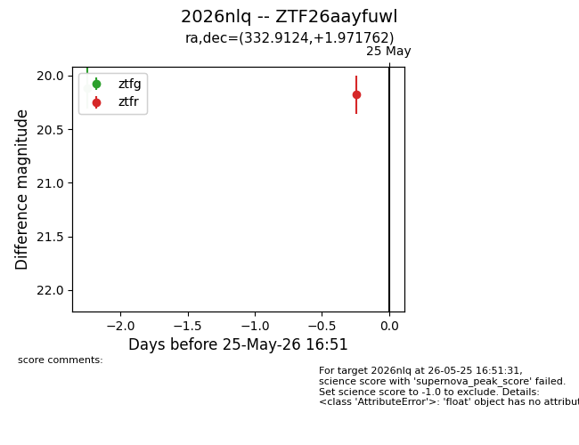
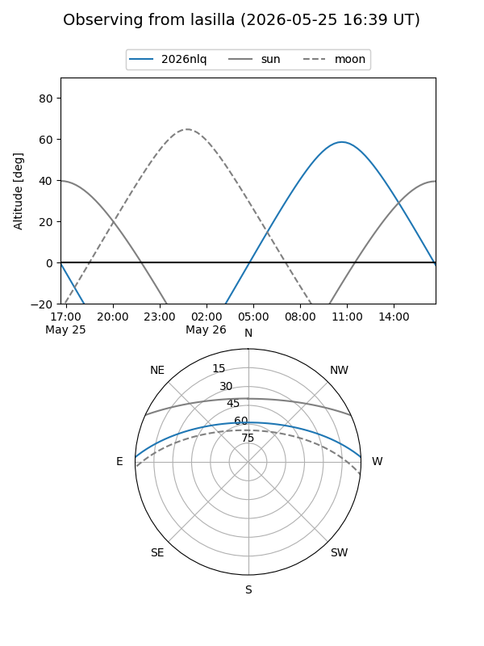
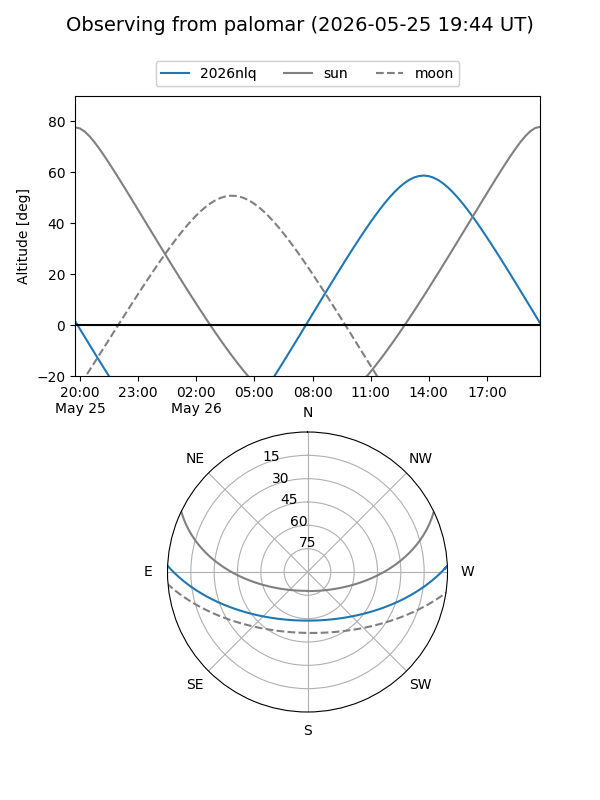
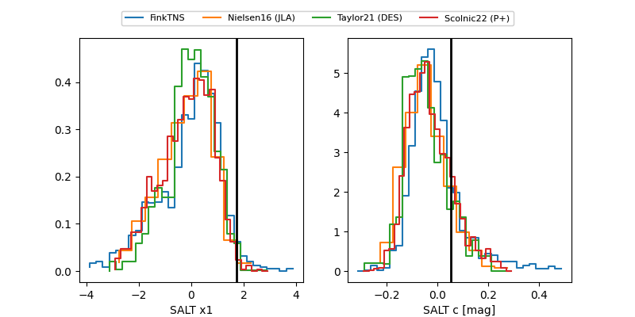

2026nlq
Target 2026nlq at 2026-05-25 16:53
Aliases and brokers:
lsst-FINK: link
lsst-Lasair: link
lsst-ALeRCE: link
ztf-FINK: link
ztf-Lasair: link
ztf-ALeRCE: link
TNS: link
YSE: link
alt names
ZTF26aayfuwl (ztf,fink_ztf)
2026nlq (tns,yse)
Coordinates:
equatorial (ra, dec) = 332.9124,+1.97176
equatorial (HMS+DMS) = 22:11:38.97,+01:58:18.34
galactic (l, b) = (63.5643,-41.77486)
Flags:
TNS confirmed: nan
Photometry:
last ztfg=20.12, ztfr=20.18
1 ztfg, 1 ztfr detections
Lightcurve

Visibility


Additional plots
